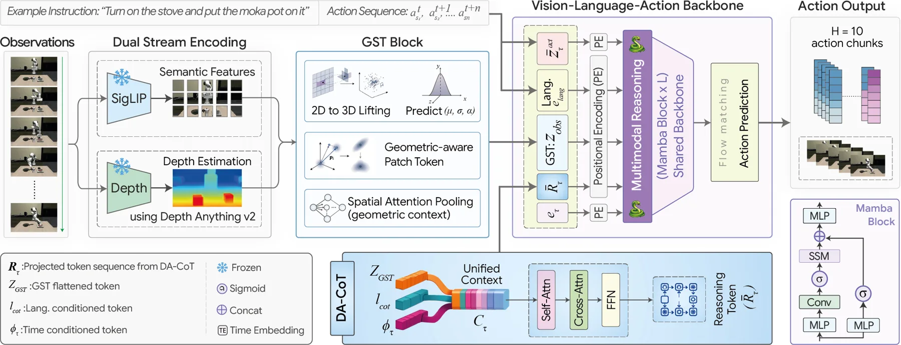

桥接价值
清晰展示从几何表征到空间推理再到操作决策的桥接路径，需继续检验深度误差和 sim-to-real 鲁棒性。
直接命中 embodied spatial reasoning 与 VLA，并把 3D 几何 token 引入策略模型。
清晰展示从几何表征到空间推理再到操作决策的桥接路径，需继续检验深度误差和 sim-to-real 鲁棒性。
当前为旧数据兼容显示；下一次任务会优先写入结构化海报字段。
清晰展示从几何表征到空间推理再到操作决策的桥接路径，需继续检验深度误差和 sim-to-real 鲁棒性。
直接命中 embodied spatial reasoning 与 VLA，并把 3D 几何 token 引入策略模型。
直接命中 embodied spatial reasoning 与 VLA，并把 3D 几何 token 引入策略模型。
当前记录未提供结构化边界与风险，需人工判断。
GaussVLA 用 Gaussian Spatial Tokenizer 将语义和深度特征提升为紧凑 3D Gaussian tokens，并通过深度感知 Chain-of-Thought 进行结构化几何推理；在 LIBERO 上报告 200M 参数和 93.5% 平均成功率。
Vision-Language-Action (VLA) models encode visual observations as flat 2D patch tokens that carry no intrinsic geometric structure, and augmenting them with dense monocular depth injects per-pixel scalar values that encode neither surface orientation nor geometric confidence. This leaves the policy with limited structured spatial reasoning for action prediction. We propose GaussVLA, a Mamba-based VLA that incorporates two custom modules: Gaussian Spatial Tokenizer (GST) to lift frozen semantic and depth features into compact 3D Gaussian tokens, pools geometrically salient regions with learned queries, and \emph{Depth-Aware Chain-of-Thought (DA-CoT)} that performs structured, non-autoregressive geometric reasoning under language and flow-time conditioning. Across both simulation and real-world evaluations, GaussVLA demonstrates strong spatial-manipulation performance while remaining parameter-efficient. On LIBERO, it achieves 93.5% average success and 100.0% success on the Spatial suite with only 200M parameters, improving over SpatialVLA by 19.7% relative average success while remaining significantly more parameter-efficient.


{kind=link}